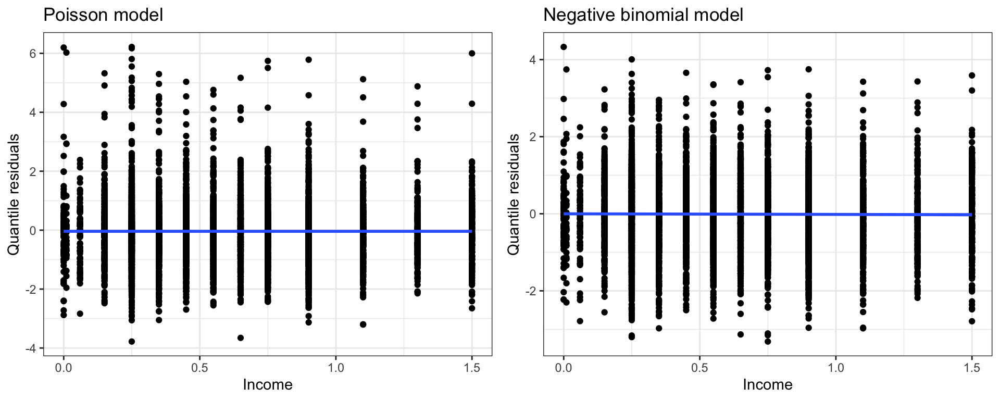

Call:
glm(formula = visits ~ gender + age + income + insurance, family = poisson,
data = DoctorVisits)
Coefficients:
Estimate Std. Error z value Pr(>|z|)
(Intercept) -1.66099 0.09724 -17.081 < 2e-16 ***
genderfemale 0.18533 0.05664 3.272 0.001068 **
age 0.90922 0.16166 5.624 1.86e-08 ***
income -0.29751 0.08606 -3.457 0.000546 ***
insuranceprivate 0.14918 0.07088 2.105 0.035319 *
insurancefreepoor -0.40545 0.17989 -2.254 0.024205 *
insurancefreerepat 0.25013 0.09264 2.700 0.006931 **
---
Signif. codes: 0 '***' 0.001 '**' 0.01 '*' 0.05 '.' 0.1 ' ' 1
(Dispersion parameter for poisson family taken to be 1)
Null deviance: 5634.8 on 5189 degrees of freedom
Residual deviance: 5417.7 on 5183 degrees of freedom
AIC: 7763.3
Number of Fisher Scoring iterations: 6Exam 2 review questions
Below are questions to help you study for Exam 2. These are some examples of the kinds of questions I might ask.
- This is not a practice exam.
- The questions cover most, but not all, possible material for the exam.
- The distribution of questions here is not necessarily reflective of the distribution of questions on the actual exam.
Data
In this activity, you will work with data from the 1977-1978 Australian Health Survey. The DoctorVisits data contains information on 5190 respondents, and the researchers analyzing the data are interested in the number of times each respondent visited the doctor in the past 2 weeks. The variables include:
visits: Number of doctor visits in past 2 weeks.gender: Factor indicating gender.age: Age in years divided by 100.income: Annual income in tens of thousands of dollars.insurance: type of health insurance. Possible types are None, Private, Free (poor), and Free (repat). Free (poor) indicates free health insurance due to low income, while Free (repat) indicates free health insurance due to old age, disability, or veteran status.
Questions
Initial Poisson model
The researchers are interested in modeling the number of doctor visits in the past 2 weeks. Since the number of doctor visits is a count variable, they propose using a Poisson regression model. Below is the output of their fitted model:
- Write down the population Poisson model corresponding to the fitted model shown in the R output above.
Solution:
\[Visits_i \sim Poisson(\lambda_i)\]
\[\log(\lambda_i) = \beta_0 + \beta_1 Gender_i + \beta_2 Age_i + \beta_3 Income_i + \beta_4 Private_i + \beta_5FreePoor_i + \beta_6 FreeRepat_i\] where \(Gender_i = 0\) if male and \(Gender_i = 1\) if female.
- Interpret the estimated slope \(\widehat{\beta}_2\) in terms of the number of doctor visits in the past 2 weeks.
Solution: A one-unit increase in respondent age is associated with an increase by a factor of \(\exp\{0.90922\} = 2.48\) (i.e., a 148% increase) in the average number of doctor visits in the last two weeks, holding gender, income, and insurance constant.
Now, a one-unit increase here is pretty meaningless, because a one-unit increase in age would be 100 years. So, let’s instead think about a one-year increase, which would be a change of 0.01 in age. A one-year increase in respondent age is associated with an increase by a factor of \(exp\{0.01(0.90922) \} = 1.0091\) (i.e., a 0.9% increase) in the average number of doctor visits in the last two weeks, holding gender, income, and insurance constant.
- An offset was not used in this model. Describe a situation in which we might want to use an offset when modeling the number of doctor visits.
Solution: Offsets are used when observations have different levels of exposure. If we were to record the number of doctor visits over different lengths of time (e.g., over one week for some respondents, 1 year for others), then we would want to include an offset that accounted for this length of time.
- After accounting for the other variables in the model, is there a relationship between income and the number of doctor visits in the past 2 weeks? Use a hypothesis test to answer this question; you should be able to calculate your test statistic from the output above.
Solution: Our hypotheses are
\[H_0: \beta_3 = 0 \hspace{1cm} H_A: \beta_3 \neq 0\] We can use a \(z\)-test to test these hypotheses. The observed test statistic is -3.457 and the p-value is 0.000546; so, we have evidence against the null hypothesis that there is no relationship between income and the number of doctor visits.
- What is the estimated number of doctor visits in the past 2 weeks for a male participant, aged 20, with no health insurance, who makes $5000 annually?
Solution:
\[\widehat{\lambda}_i = \exp\{-1.661 + 0.9092(20/100) - 0.298(5000/10000)\} = 0.196\]
Model diagnostics
The Poisson model assumes that the Poisson distribution is a good choice for the response. What if it isn’t? To choose between a Poisson, quasi-Poisson, and negative binomial model, the researchers produce the following output in R:
Call:
glm(formula = visits ~ gender + age + income + insurance, family = quasipoisson,
data = DoctorVisits)
Coefficients:
Estimate Std. Error t value Pr(>|t|)
(Intercept) -1.66099 0.13948 -11.908 < 2e-16 ***
genderfemale 0.18533 0.08124 2.281 0.0226 *
age 0.90922 0.23188 3.921 8.93e-05 ***
income -0.29751 0.12344 -2.410 0.0160 *
insuranceprivate 0.14918 0.10167 1.467 0.1423
insurancefreepoor -0.40545 0.25803 -1.571 0.1162
insurancefreerepat 0.25013 0.13287 1.882 0.0598 .
---
Signif. codes: 0 '***' 0.001 '**' 0.01 '*' 0.05 '.' 0.1 ' ' 1
(Dispersion parameter for quasipoisson family taken to be 2.057397)
Null deviance: 5634.8 on 5189 degrees of freedom
Residual deviance: 5417.7 on 5183 degrees of freedom
AIC: NA
Number of Fisher Scoring iterations: 6
Call:
glm.nb(formula = visits ~ gender + age + income + insurance,
data = DoctorVisits, init.theta = 0.4319080953, link = log)
Coefficients:
Estimate Std. Error z value Pr(>|z|)
(Intercept) -1.68994 0.12316 -13.721 < 2e-16 ***
genderfemale 0.21565 0.07370 2.926 0.00343 **
age 0.92155 0.21373 4.312 1.62e-05 ***
income -0.28058 0.10965 -2.559 0.01050 *
insuranceprivate 0.13873 0.08902 1.558 0.11914
insurancefreepoor -0.40597 0.21293 -1.907 0.05658 .
insurancefreerepat 0.25590 0.12315 2.078 0.03771 *
---
Signif. codes: 0 '***' 0.001 '**' 0.01 '*' 0.05 '.' 0.1 ' ' 1
(Dispersion parameter for Negative Binomial(0.4319) family taken to be 1)
Null deviance: 3119.9 on 5189 degrees of freedom
Residual deviance: 2990.4 on 5183 degrees of freedom
AIC: 7062
Number of Fisher Scoring iterations: 1
Theta: 0.4319
Std. Err.: 0.0316
2 x log-likelihood: -7046.0330 
- Using the R output above, explain which model you would use: the Poisson, quasi-Poisson, or negative binomial. It is possible that more than one model may be suitable for the data.
Solution: The quantile residual plot shows that the shape assumption is satisfied. For the Poisson model, however, the distribution assumption does not appear to be satisfied – examining the quantile residual plot, we see more variability than expected, and the estimated dispersion parameter is about 2. Because the residuals have approximately constant variance, either a quasi-Poisson or negative binomial model could be suitable here.
Sketch a quantile residual plot for a Poisson regression fit, which suggests that a negative binomial model is needed.
Compare and contrast the quasi-Poisson model with the Poisson model. Which parts of the fitted model are the same? Which parts are different?
Solution: The estimated coefficients are the same, but the standard errors are different. Because the quasi-Poisson estimates the dispersion parameter, we use \(t\) and \(F\) tests for the quasi-Poisson (as opposed to \(z\) and \(\chi^2\) tests for the Poisson).
- Using your chosen model from question 6, create a confidence interval for \(\beta_2\) (the coefficient on income).
Solution:
Using the quasi-Poisson:
\[-0.29751 \pm t^* (0.12344)\]
The critical value for a 95% confidence interval, with a \(t_{5183}\) distribution, is 1.96 (just like for a Normal(0, 1), because the df is large enough). This gives
\[-0.29751 \pm 1.96 (0.12344) = (-0.539, -0.056)\]
Using the negative binomial:
\[-0.28058 \pm 1.96(0.10965) = (-0.495, -0.066)\]
ZIP models
Concerned about the possibility of zero-inflation, the researchers decide to fit a ZIP model instead:
Call:
zeroinfl(formula = visits ~ gender + age + income + insurance, data = DoctorVisits)
Pearson residuals:
Min 1Q Median 3Q Max
-0.6321 -0.4544 -0.3766 -0.3197 12.4987
Count model coefficients (poisson with log link):
Estimate Std. Error z value Pr(>|z|)
(Intercept) 0.11676 0.16135 0.724 0.46929
genderfemale -0.13686 0.08887 -1.540 0.12356
age 0.36657 0.25216 1.454 0.14602
income -0.40862 0.14448 -2.828 0.00468 **
insuranceprivate -0.12401 0.11844 -1.047 0.29507
insurancefreepoor 0.18349 0.26248 0.699 0.48451
insurancefreerepat -0.32347 0.14177 -2.282 0.02251 *
Zero-inflation model coefficients (binomial with logit link):
Estimate Std. Error z value Pr(>|z|)
(Intercept) 1.7045 0.2165 7.875 3.41e-15 ***
genderfemale -0.5208 0.1304 -3.994 6.49e-05 ***
age -0.7968 0.3704 -2.151 0.0315 *
income -0.1971 0.2010 -0.981 0.3267
insuranceprivate -0.3882 0.1556 -2.494 0.0126 *
insurancefreepoor 0.7017 0.3103 2.261 0.0238 *
insurancefreerepat -1.0136 0.2232 -4.541 5.59e-06 ***
---
Signif. codes: 0 '***' 0.001 '**' 0.01 '*' 0.05 '.' 0.1 ' ' 1
Number of iterations in BFGS optimization: 22
Log-likelihood: -3614 on 14 Df- What is a potential latent variable which could cause excess 0s in this data?
Solution: Whether the study participant ever goes to the doctor
- Write down the population ZIP model corresponding to the fitted ZIP model above. Make sure to include the random component!
Solution:
\[P(Y_i = y) = \begin{cases} e^{-\lambda_i}(1 - \alpha_i) + \alpha_i & y = 0 \\ \dfrac{e^{-\lambda_i} \lambda_i^y}{y!}(1 - \alpha_i) & y > 0 \end{cases}\]
\[\log \left( \dfrac{\alpha_i}{1 - \alpha_i} \right) = \gamma_0 + \gamma_1 Gender_i + \gamma_2 Age_i + \gamma_3 Income_i + \gamma_4 Private_i + \gamma_5FreePoor_i + \gamma_6 FreeRepat_i\]
\[\log(\lambda_i) = \beta_0 + \beta_1 Gender_i + \beta_2 Age_i + \beta_3 Income_i + \beta_4 Private_i + \beta_5FreePoor_i + \beta_6 FreeRepat_i\]
- What is the estimated number of doctor visits in the past 2 weeks for a male participant, aged 20, with no health insurance, who makes $5000 annually?
Solution:
\[\log \left( \dfrac{\widehat{\alpha}_i}{1 - \widehat{\alpha}_i} \right) = 1.70 - 0.80(0.2) - 0.20(0.5) = 1.44\]
\[\log(\widehat{\lambda}_i) = 0.12 + 0.37(0.2) - 0.41(0.5) = -0.011\] This gives \(\widehat{\alpha}_i = 0.808\) and \(\widehat{\lambda}_i = 0.99\). So, the expected number of visits is \((1 - 0.808)0.99 = 0.19\).
- What is the estimated probability that a male participant, aged 20, with no health insurance, who makes $5000 annually, did not go to the doctor in the past 2 weeks?
Solution:
\(\widehat{P}(Y_i = 0) = e^{-\widehat{\lambda}_i}(1 - \widehat{\alpha}_i) + \widehat{\alpha}_i = e^{-0.99}(1 - 0.808) + 0.808 = 0.880\)
- What does the logistic component of the ZIP model estimate? (i.e., the component that R calls the
zero-inflation model, in contrast to thecount model).
Solution: It estimates \(\widehat{\alpha}_i\), the probability that \(Z_i = 1\) (i.e., the probability that the observation belongs to the group for which \(Y_i\) is always 0, as opposed to the Poisson group).
More questions
(These are unrelated to the data scenario described above)
Suppose we have data \((X_i, Y_i)\) which was generated from the model
\[Y_i \sim NB(\theta, p_i)\]
\[\log(\mu_i) = \beta_0 + \beta_1 X_i\]
- Write down \(Var(Y_i)\) as a function of \(\mu_i\) and \(\theta\).
Solution: \(Var(Y_i) = \mu_i + \dfrac{\mu_i^2}{\theta}\)
- For a Poisson, the mean and variance are the same. As \(\theta\) increases, does the negative binomial look more like a Poisson distribution, or less like a Poisson distribution? Explain your reasoning.
Solution: If \(\mu_i\) stays constant while \(\theta \to \infty\), then \(Var(Y_i) \to \mu_i\), so the negative binomial looks more like a Poisson.
- Suppose that we don’t know that the correct distribution of \(Y_i\) is Negative Binomial. Instead, we fit a Poisson regression model.
- Will the estimate \(\widehat{\beta}_1\) be a biased estimator of the true parameter \(\beta_1\)? Or will, on average, \(\widehat{\beta}_1\) be close to \(\beta_1\)? Explain, with reference to a simulation study from homework.
- Let \(SE(\widehat{\beta}_1)_{Poisson}\) be the estimated standard error for \(\widehat{\beta}_1\) from the Poisson model (i.e., the value that appears in the “standard error” column of the model output). Will this standard error be too big, too small, or just right?
Solution: The shape assumption for the Poisson model matches the shape assumption for the negative binomial. As we saw in simulations on HW 7, the bias will be pretty small. That is, on average \(\widehat{\beta}_1\) be close to \(\beta_1\).
However, the estimated standard error from the Poisson model will be too small, because there is more variability in the data than accounted for by the Poisson model.
- Using our fitted Poisson regression model, we construct a 95% confidence interval for \(\beta_1\). Recall that a “95% confidence interval” means that, if we were to repeat the study many times with many different datasets, 95% of the intervals would contain the true parameter \(\beta_1\). The fraction of intervals which capture the true parameter is called the coverage. If I construct 95% confidence intervals from a Poisson model, for data that is really negative binomial, what should I expect for the coverage of my intervals? Explain.
- 95%
- Less than 95%
- Greater than 95%
Solution: (b) less than 95%. The Poisson model doesn’t capture the full amount of variability in the response. As a result, the standard errors estimated by the Poisson model are too small, and the confidence intervals are too narrow. This results in reduced coverage.
- Instead of fitting a Poisson model, we consider a quasi-Poisson model. Let \(SE(\widehat{\beta}_1)_{QP}\) be the estimated standard error from the quasi-Poisson model.
- Provide the equation relating \(SE(\widehat{\beta}_1)_{QP}\) to \(SE(\widehat{\beta}_1)_{Poisson}\)
- In the scenario described above (in which the true data come from a negative binomial distribution), do you expect \(SE(\widehat{\beta}_1)_{QP}\) to be larger, smaller, or the same as \(SE(\widehat{\beta}_1)_{Poisson}\)?
Solution:
\[SE(\widehat{\beta}_1)_{QP} = \left(\sqrt{\widehat{\phi}}\right)SE(\widehat{\beta}_1)_{Poisson}\] If the true data come from a negative binomial, we would expect \(SE(\widehat{\beta}_1)_{QP}\) to be larger than \(SE(\widehat{\beta}_1)_{Poisson}\), because there is greater variability in the response which will be captured (to some extent) by the estimated dispersion parameter \(\widehat{\phi}\).
- How is the dispersion parameter \(\phi\) estimated for a Poisson / quasi-Poisson fit? Provide the full formula.
Solution:
The \(i\)th Pearson residual for a Poisson fit is
\[e_{(P)i} = \dfrac{Y_i - \widehat{\lambda}_i}{\sqrt{\widehat{\lambda}_i}}\] Then,
\[\widehat{\phi} = \frac{1}{n-p} \sum \limits_{i=1}^n e_{(P)i}^2\]
- If the data truly come from a Poisson distribution, what should be the approximate value of \(\widehat{\phi}\)?
Solution: \(\widehat{\phi} \approx 1\)